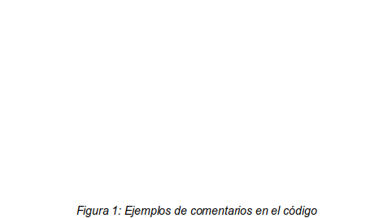
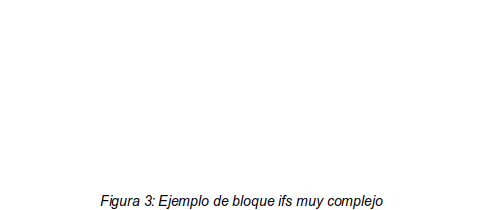

Universidad Autónoma de Baja California
Facultad de Ciencias Químicas e Ingeniería
Plan de Ingeniero en Software y Tecnologías Emergentes
Materia
Verificación y Validación del Software (361)
Meta 2.1.5
Inspección de código
Docente
Claudia Gabriel Tona Castro
Participantes:
Emanuel Castro Vega (1288441)
Roberto Isaac Arias Guerrero (1292118)
Héctor Miguel Macías Baltazar (1272124)
Luis Eduardo Galindo Amaya (1274895)
Índice de figuras
Meta 2.1.5
En términos simples es cuando un desarrollador revisa manualmente el código que hicieron otros programadores para poder identificar errores, verificar casos necesarios y verificar si el código cumple las directrices especificadas por el equipo.
Integrar las revisiones de código en el equipo no solo nos permite mantener un estilo de codificación uniforme en todo el proyecto, la también facilitan la transmisión de conocimiento a lo largo del equipo, por ejemplo si algunos miembros son especialistas en un área determinada pueden apoyar a los que no son tan experimentados a entenderá alguna cosa concreta mediante ejemplos prácticos.
La única desventaja significativa es el tiempo necesario para realizar las pruebas, las revisiones de código se pueden automatizar parcialmente con linterns y analizadores estáticos pero las partes mas especificas (por ejemplo funcionamiento interno de frameworks etc...) no es posible automatizarlas, por lo que siempre es necesario que otro programador asista a los otros programadores con la revisión.
Un grupo de programadores experimentados que se reúnen para analizar y mejorar el código de los demás, este proceso de revisión garantiza que el código se alinee con los estándares de codificación, sea eficiente y esté libre de errores lógicos.
las revisiones de diseño evalúan la arquitectura del software y las decisiones de diseño. Esto garantiza una utilización eficiente de los recursos, escalabilidad y adhesión a las mejores prácticas.
Las revisiones de documentos aseguran que los documentos técnicos, guías de usuario, manuales y casos de prueba estén bien escritos, claros y sean fáciles de usar para los usuarios.
Verificacion |
Objetivos |
Depuración |
|
Seguridad |
|
Legibilidad del código |
|
Duplicación de código |
|
Denominación |
|
Pruebas |
|
Documentación |
|
Posibilidad de mejora |
|
Rastreo de cambios |
|
Proporcionar comentarios |
|
Es un prototipo para un juego de plataformas 2D tipo Mario hecho en pygame1.
El código del proyecto funciona correctamente pero no tiene ninguna forma de calcular el delta time2 por lo que podría tener problemas para sincronizar los frames entre diferentes dispositivos.
El código no requiere de revisiones de seguridad ya que no tiene ningún tipo de acceso o salida del sistema, todo se trabaja desde el código los niveles están programados directamente el el código
El código tiene algunos comentarios explicando algunas partes del código, sin embargo no sigue ningún estándar de documentación para python ni puede generar documentación de ningún tipo:

Ademas tiene algunos comentarios que son código muerto por lo que seria recomendado quitarlos ya que el código a su alrededor se actualiza y pierde sentido que este allí:
El código no tiene repeticiones significativas, sin embargo hay algunos bloques if que son bastante largos por lo que seria adecuado intentar convertilos en métodos o utilizar pattern maching para tratar de simplificarlos o extraerlos. Ejemplo:

Las variables y los métodos están adecuadamente nombrados, cada nombre de cada método explica adecuadamente que hace y no da cabida a confusiones.
El proyecto no cuenta con pruebas de ningún tipo por lo que no se puede garantizar la calidad de este.
En general el código esta bien hecho para ser un prototipo, algunas de las cosas a mejorar podrían ser:
Utilizar tiempo delta para poder sincronizar la ejecución.
Utilizar algún sistema de comentarios estándar.
Utilizar Sphinx o similar para generar la documentación del proyecto.
Extraer algunos métodos para poder hacer mas fácil la lectura del código.
Eliminar código muerto.
Crear pruebas unitarias para los métodos del personaje.
Simplificar bloques Ifs dentro del código.
Hacer que los niveles existan en archivos externos.
Utilizar un litern para mantener la consistencia del código en los archivos.
Utilizar un analizador de código estático para mejorar el estilo.
Crear un requirements.txt para instalar las dependencias.
Utilizar algún patrón de diseño para simplificar como las entidades interactúan.
Con esta actividad aprendí sobre las posibles soluciones a deficiencias en código, y la identificación de estas que es un paso importante en este proceso, también sobre las limitaciones de realizar una auditoría así como las razones por las que son útiles, y por último, la necesidad de incluir los diferentes aspectos de un producto de software en la realización de la auditoría.
Con esta actividad aprendí sobre la relevancia e importancia de la revisión de código en el contexto de la validación y verificación de software. A diferencia de la auditoría de calidad, la cual se centra más en observar el cumplimiento de los requerimientos y la satisfacción del usuario, veo que con esta revisión es más sencillo identificar problemas estrictamente relacionados con el código. Concluyo que la revisión de código nos ayuda no sólo a corregir problemas técnicos, sino también a mejorar nuestras prácticas y/o conocimiento de las tecnologías de desarrollo que utilizamos.
A través de esta actividad, he reforzado mi comprensión de la importancia de la revisión de código como herramienta fundamental para asegurar la calidad del software. He aprendido a identificar deficiencias en el código, comprender las limitaciones de las auditorías y la necesidad de considerar todos los aspectos del producto de software.
A lo largo de esta meta aprendí como hacer una revisión de código, como identificar problemas dentro de este y como hacer propuestas de mejora para aumentar la calidad del mismos. Pienso que poder identificar problemas incluso si el código funciona nos permite mejorar como programadores y compartir nuestro conocimiento con otros integrantes del equipo.
Radigan, D. (n.d.). Qué es una revisión de código y cómo puede Ahorrar Tiempo. Atlassian. https://www.atlassian.com/es/agile/software-development/code-reviews
Saxena, A. (2023, September 7). Types of reviews in software testing: What are they?. Testsigma Blog. https://testsigma.com/blog/types-of-review-in-software-testing/#Types_of_Review_in_Software_Testing
Garcia, C. (2022, September 7). Revisiones de Código: Una Guía completa sobre cómo realizar una revisión de código. AppMaster. https://appmaster.io/es/blog/revisiones-de-codigo
Tijuana,